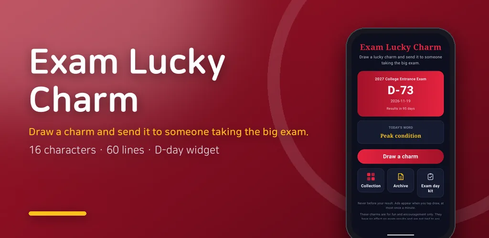
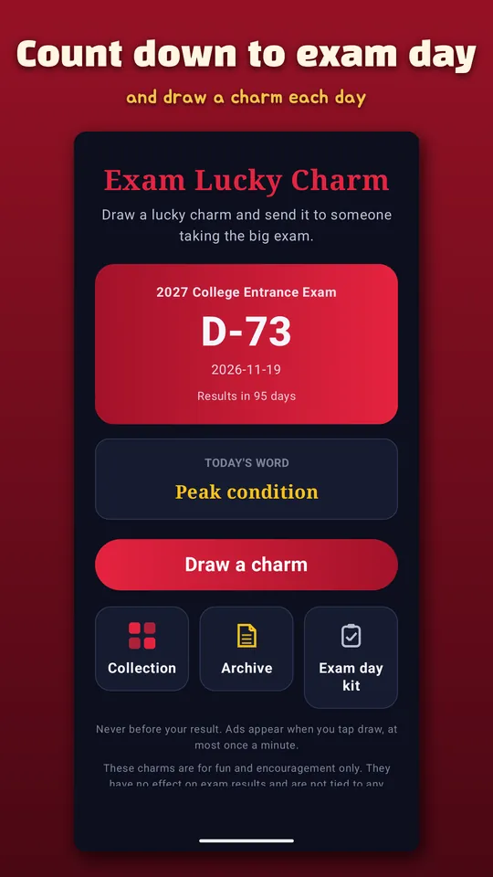
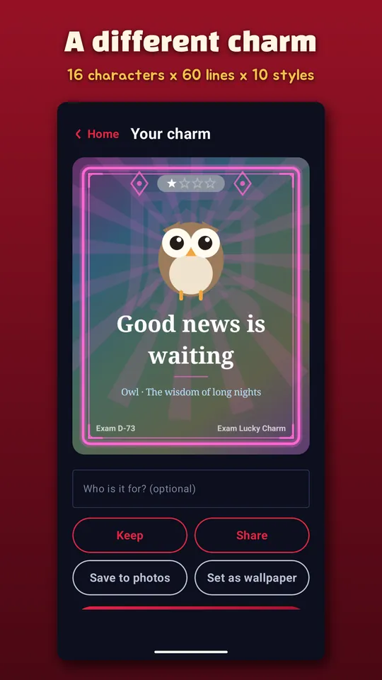
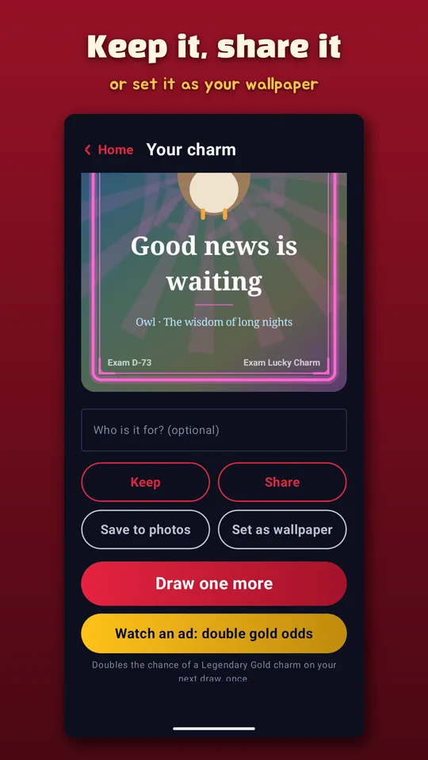
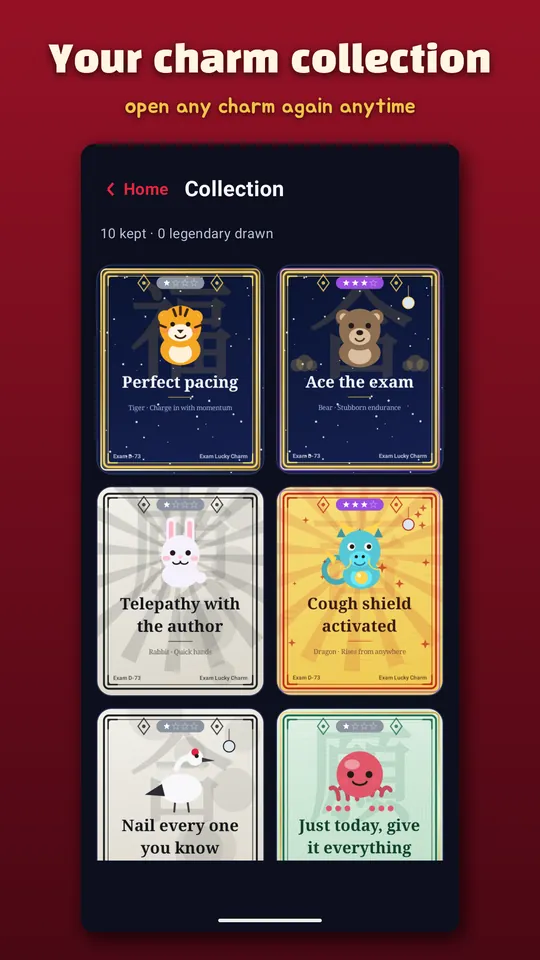
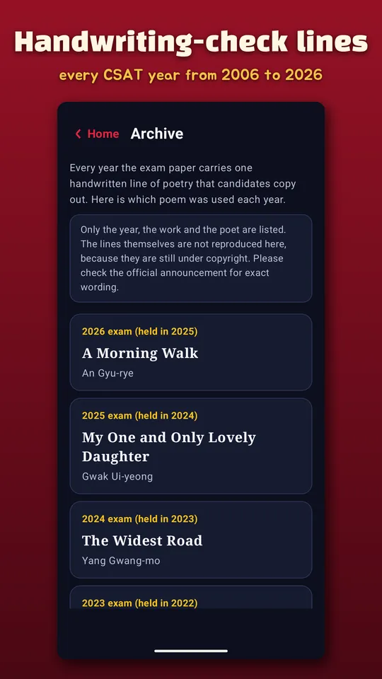
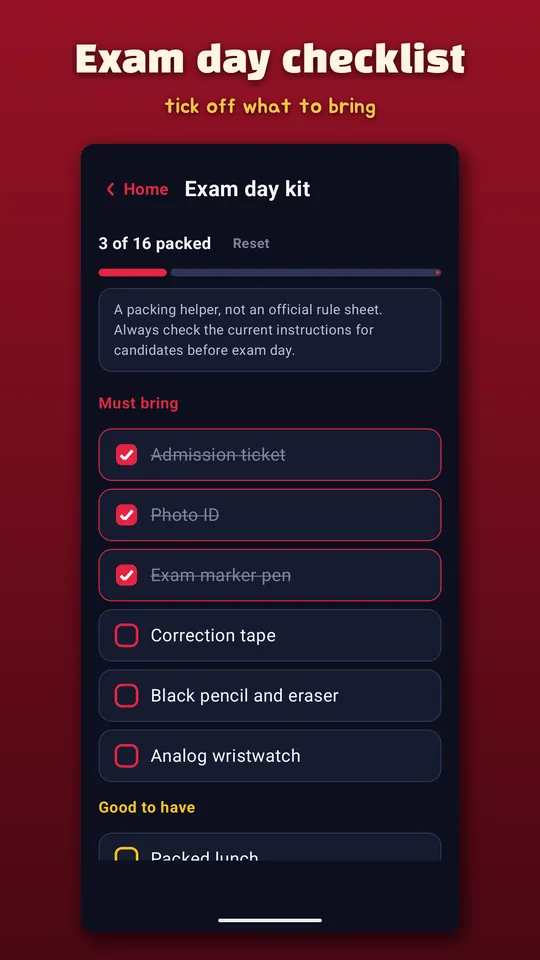

Exam Luck Charm: CSAT D-Day
Draw a lucky exam charm, send it to a student, and count down to exam day.







About this app
A lucky charm generator that counts down to exam day
Draw a good-luck charm and send it to someone taking an exam.
16 characters x 60 cheering lines x 10 charm styles are combined
at random, so the same charm rarely appears twice.
Draw a charm
- One tap re-rolls the character, message, style and ornaments.
- Enter the recipient's name to make the charm personal.
- Common, Rare, Epic and Legendary grades. Legendary comes in gold leaf.
Exam D-Day widget
- Put the countdown on your home screen and check it every day.
- Inside the app you also see the days left until results are announced.
Wallpaper and sharing
- Set any charm as your phone wallpaper, with a preview first.
- Share the charm image to any messenger.
- Keep your charms in the collection and open them again anytime.
Handwriting-check phrase archive
- Which poem was used on the Korean CSAT handwriting-check line each year,
from 2006 to 2026: year, title and author.
- Out of respect for copyright, only the source information is listed.
Exam day checklist
- Tick off what you need to bring to the exam hall.
Notes
- These charms are cheering novelties, made for fun.
They have no effect on exam results and are not tied to any religion.
- Works offline. No personal data is collected.
- Ads appear when you tap draw (at most once a minute), and never before your result.
Android · free with ads · Developer: RealTunaLove · Store listing in 17 languages
Background story: why I built it